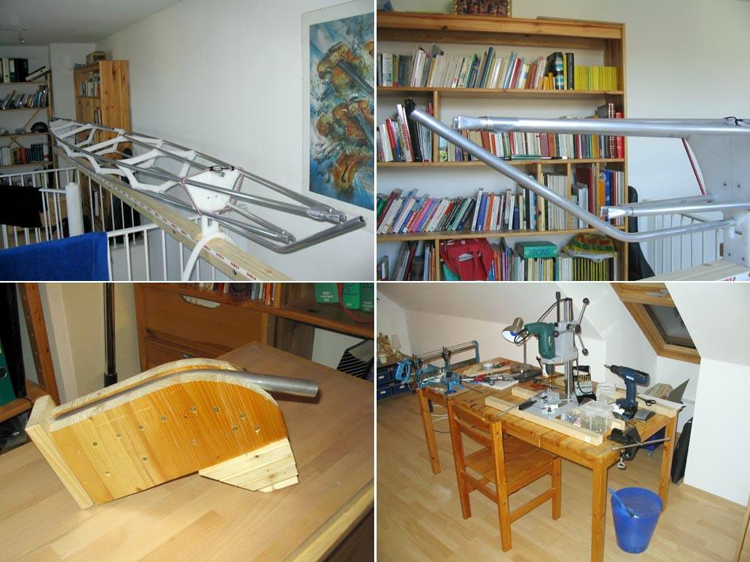

| Yarra / Yarra LC | Menu Previous Page Next Page |
|

Guido Borck of Germany displays his partially completed folding Yarra frame. His homebuilt tube bender has done a good job of creating the stems. He will next fabricate HDPE stem plates to connect the stringers.
|
|